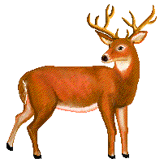
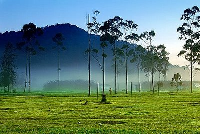
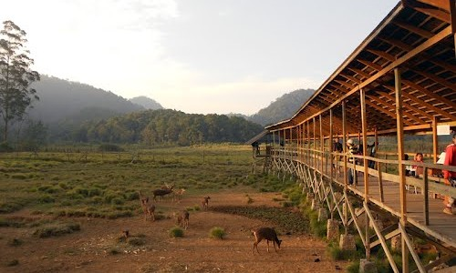
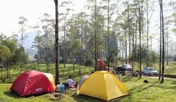
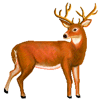
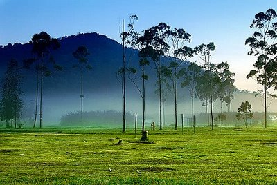
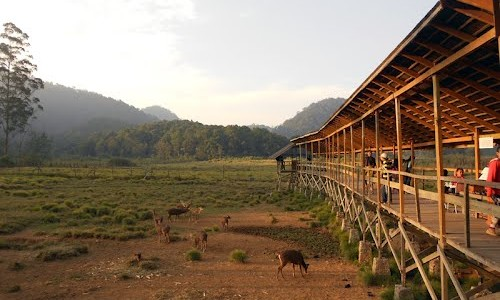
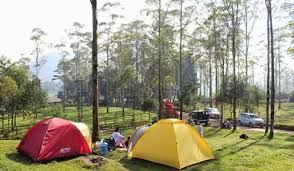

.::Wisata Ranca Upas Ciwidey::.
| Home
| Info Wisata ranca upas
| Fasilitas
| About us |
Selamat datang di Website wisata ranca upas ciwidey..

Ranca Upas atau Kampung Cai Ranca Upas adalah salah satu bumi perkemahan di Bandung, Jawa Barat, Indonesia. Terletak di Jalan Raya Ciwidey Patenggang KM. 11, Alam Endah, Ciwidey Kabupaten Bandung, dengan jarak sekitar 50 km dari pusat Kota Bandung. Memiliki luas area sekitar 215 Hektar, berada pada 1700 meter di atas permukaan laut, dengan suhu udara sekitar 17 °C - 20 °C. Sekitar area, oleh hutan lindung dengan beragam flora seperti Pohon Huru, Hamirug, Jamuju, Kihujan, Kitambang, Kurai, Pasang dan Puspa. Sedangkan fauna terdiri dari beragam jenis burung, serta beberapa satwa jinak lainnya




Follow Kami:
Facebook >> facebook.com/gunadi gugun
Instagram >> @goenlazama
Line >> @goen
| Home | Info Wisata ranca upas | Fasilitas | About us |
Selamat datang di Website wisata ranca upas ciwidey..

Ranca Upas atau Kampung Cai Ranca Upas adalah salah satu bumi perkemahan di Bandung, Jawa Barat, Indonesia. Terletak di Jalan Raya Ciwidey Patenggang KM. 11, Alam Endah, Ciwidey Kabupaten Bandung, dengan jarak sekitar 50 km dari pusat Kota Bandung. Memiliki luas area sekitar 215 Hektar, berada pada 1700 meter di atas permukaan laut, dengan suhu udara sekitar 17 °C - 20 °C. Sekitar area, oleh hutan lindung dengan beragam flora seperti Pohon Huru, Hamirug, Jamuju, Kihujan, Kitambang, Kurai, Pasang dan Puspa. Sedangkan fauna terdiri dari beragam jenis burung, serta beberapa satwa jinak lainnya
  